826CHI offers free, year-round distinctive writing programs for Chicago students. Our After-School Tutoring & Writing, Field Trips, Workshops and In-Schools programs engaged 2,507 students from 53 zip codes across the city. We are committed to bridging gaps in access to high-quality art education across Chicago by prioritizing English language learners and students attending under-resourced schools. We believe that all students should have the opportunity to gain new insights and confidence in the power of their voices.
100% of parents said that finishing schoolwork at 826 allowed their child to spend more quality time with family.
From September to June, afternoons at our writing center are filled with students prepared to dive into writing prompts, finish their homework, and do some hula-hooping as a reward. Our faithful cohort of tutors are always on hand to help students with math homework and help them revise their writing. We launched the second year of our Speakers and Snacks program, where guests attend 45-minute Q&A session from our students about their professions. Speakers this year included a sports commentator, professor, and dog trainer. This year ASTW published two chapbooks and one audio project, all of which had individual community readings. For the final chapbook release, we were thrilled to integrate physical movement into the students’ readings, courtesy of a partnership with the Dancers Awareness Project (DAP).
“826 provides my children exposure to a different demographic where they meet new friends (and get to socialize also) from different backgrounds and practice writing skills in a fun way.”
– Theresa, After School Tutoring & Writing parent
98% of teachers say this experience has given them new ideas on how to approach writing in the classroom.
During the school year, mornings at 826CHI are boisterous with visiting classrooms eager to create their own books. Our Field Trips expose students to the endless possibilities of creative writing, all while providing teachers with resources to bring our innovative pedagogy back to the classroom. Each Field Trip focuses on plot, character development, and writing with details. In 2016-2017, we welcomed nearly 80 classes of students from 1st through 12th grade. We offered four unique Field Trips: Storytelling & Bookmaking, Small Group Bookmaking, Images & Imagination, and Memoir Writing, each focused on building plot and rich description within a story. Storytelling & Bookmaking remains our most popular field trip, with students taking home their very own bound books. Some choice titles from our trips this year were Mr. Monkey and His Dance Problem, The Adventures of Cheese Dude and Gramburger and I Remember … The Big Cannonball Splash.
“You and your volunteers did a fantastic job, my students had such a great time and their love of writing is fully invigorated thanks to the enthusiasm and engagement of 826!”
– Jonathan, Teacher at Drummond Montessori
95% of Workshop students said they are proud of their writing.
Coding, podcast-making and playwriting only skim the surface of our workshops. Each semester, dozens of 826CHI volunteers propose and teach workshops to 1-12th graders that go beyond the typical English class. Workshops explore the intersections of writing with other disciplines, teaching students that crafting compelling narratives is an essential element for future success in any field. 826CHI staff and volunteers led 22 workshops in 2016-2017. Highlights of the year include a cross-generational poetry workshop led by 826CHI staff and the UChicago Writers’ Studio.
“My favorite [moment] was probably the first time we ever met, when I suddenly realized I had found other teens who really liked to write and thought that was really cool.”
– London, 9th grade, Teen Writers Studio student
100% of In-Schools students said they learned new things about how to be a good writer.
Every year 826CHI partners with local schools to provide classrooms with individualized, in-depth attention. Program staff work with classroom teachers to create curriculum that inspires, challenges and engages students. In 2016-2017 826CHI worked with four public schools. We facilitated a memoir-writing project at Prieto Elementary and continued our Digital Tutoring program at A.N. Pritzker School. Students from the other two schools—Emiliano Zapata Elementary and Roald Amundsen High School—maintained a year-long letter correspondence. These letters are documented in our Young Authors Book Project for the year, PS: You Sound Like Someone I Can Trust. A public reading in June gave students the chance to meet their letter-writing partners in person, for the very first time.
“I learned to find out who I am.”
– Kunjame, 9th Grade, Amundsen HS
compendium
compendium
Publishing is a core tenet of all our programs—we teach students ages 6 to 18 invaluable writing skills while boosting their sense of self-efficacy through publication. By publishing our young authors’ work, we aim to foster confidence levels, determination, and the perceived ability to succeed in other areas of life. The rate at which 826CHI publishes student writing remains unmatched. This year we printed 40% more publications than last year. That means 40% more binding, stapling, copy editing, designing, hair-wringing and ultimately, pride for our students! We couldn’t have done it without the help of our Design Cohort and our brand-new Editing Cohort. The greater world is also noticing our students’ stories. P.S. You Sound Like Someone I Can Trust received local and national press coverage, while Compendium, Volume 5 won a whopping 4 Awards from PubWest and National Indie Excellence Book Awards.
"It feels awesome [to be published]! I feel like I've done a good job by writing my story that not only has a lot of meaning to me, but also to all of those Mexican immigrants that I am representing.”
– Cithlaly, 8th Grade, Emiliano Zapata Academy
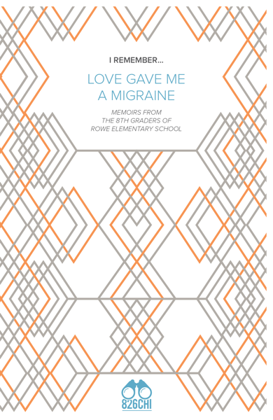 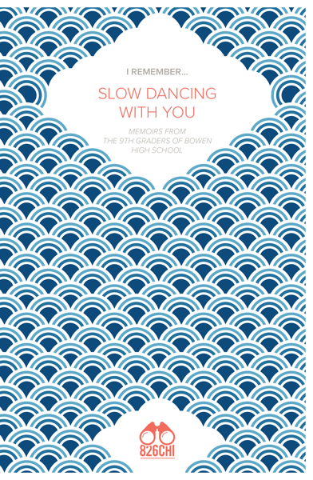 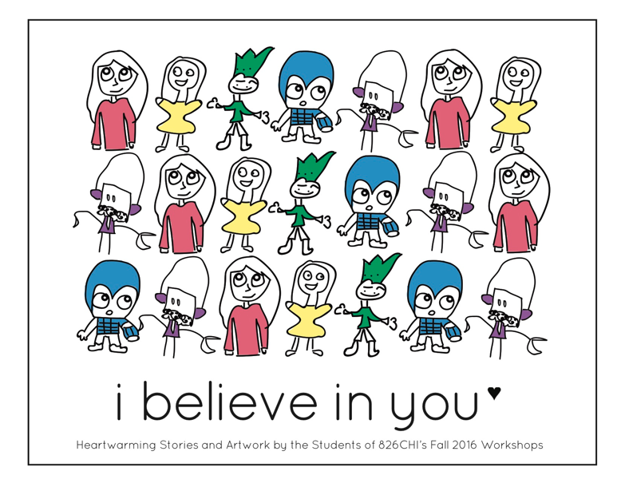 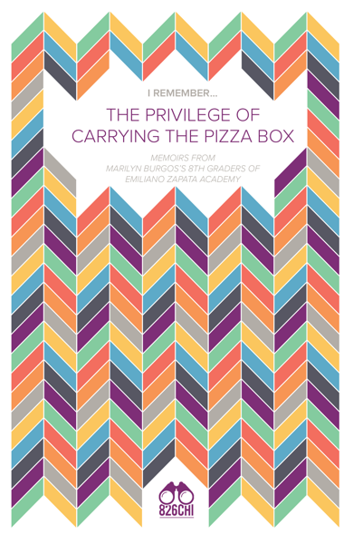
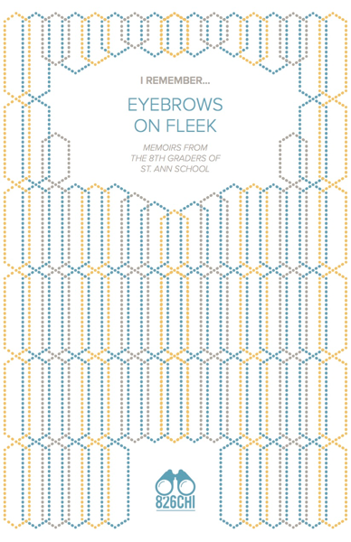 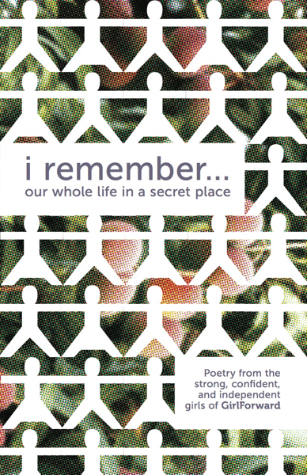 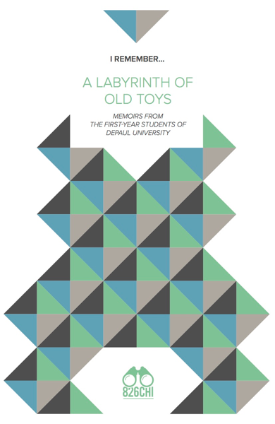 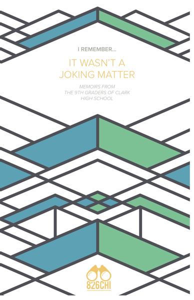
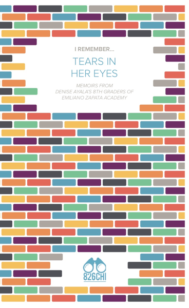 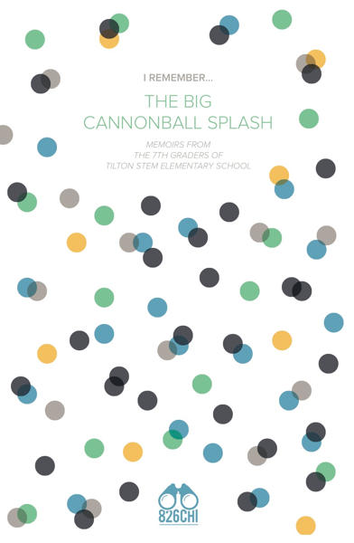 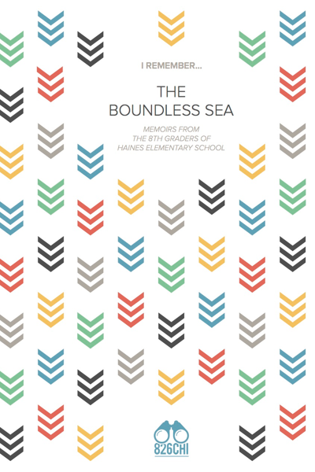 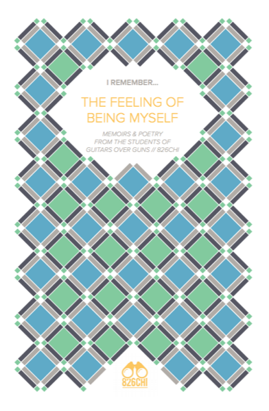 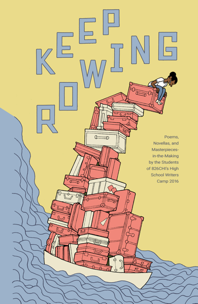
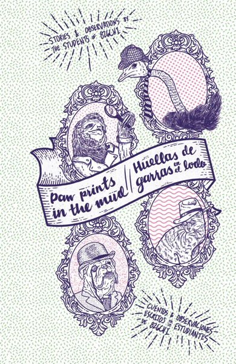 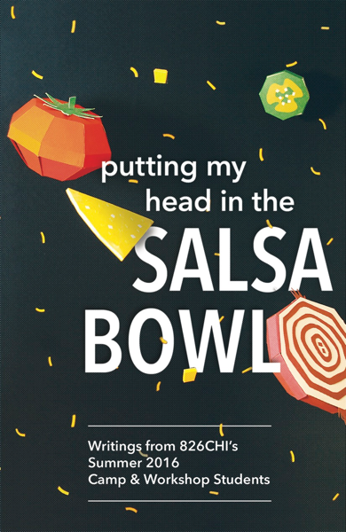 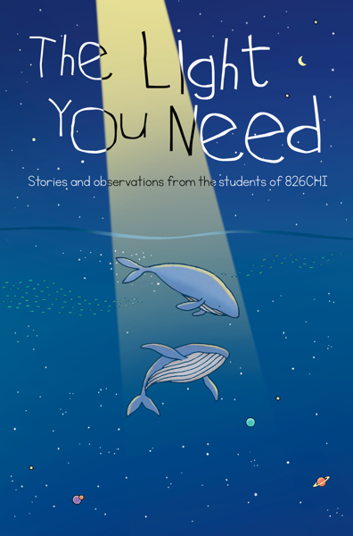 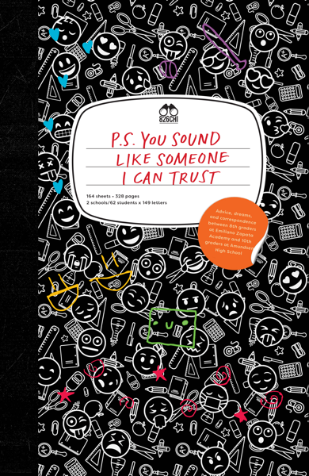